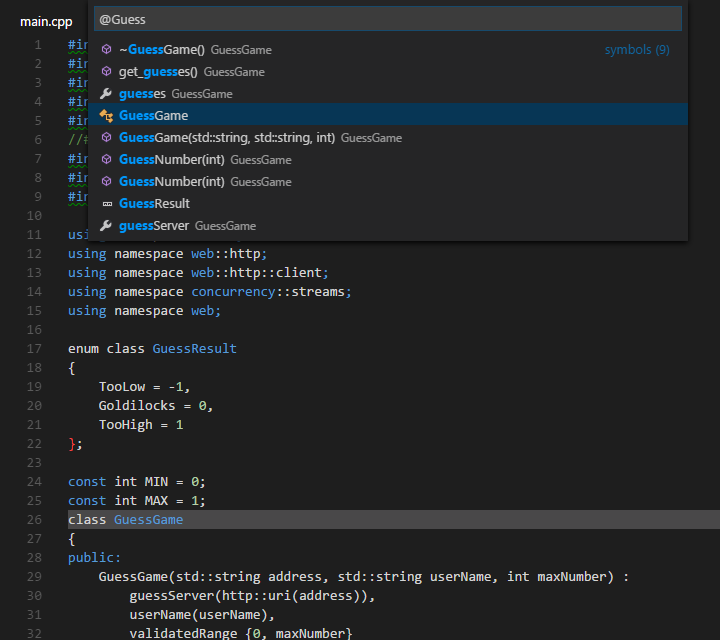
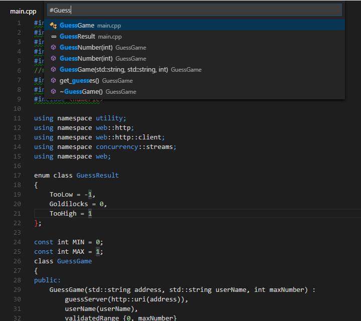
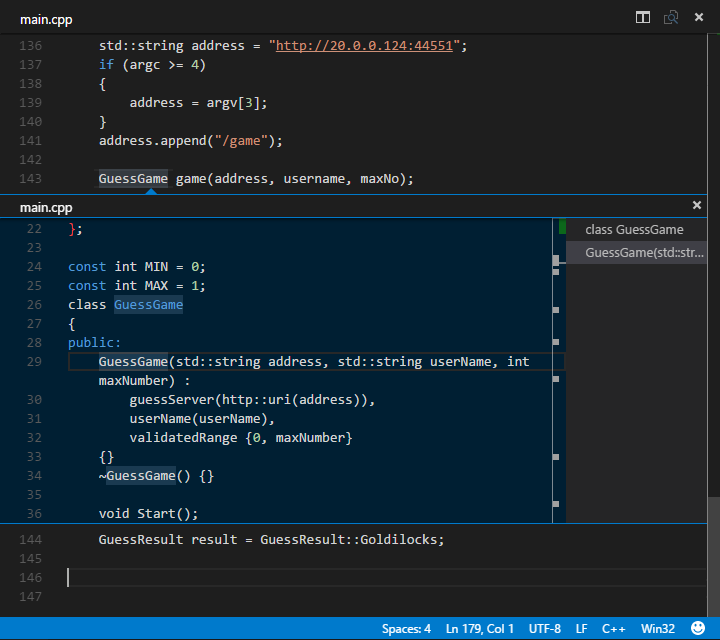
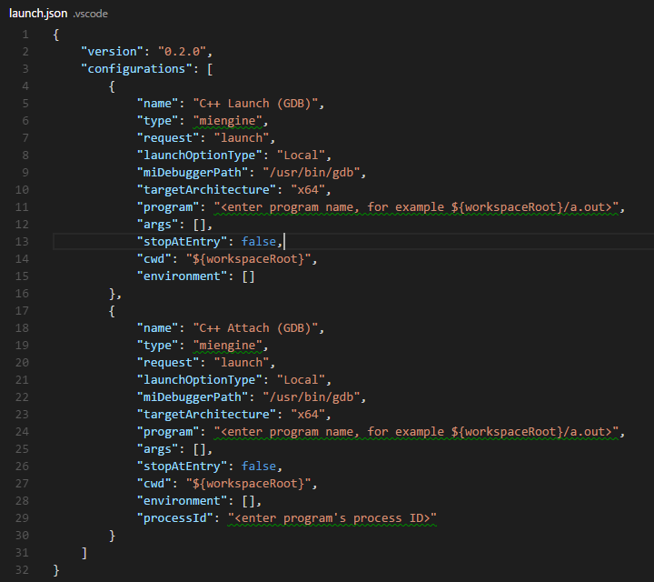
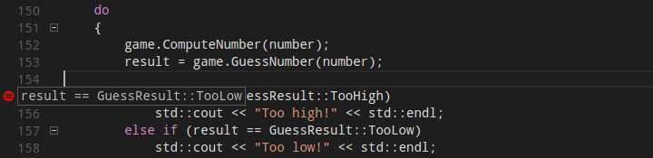

C/C++ for VS Code (预览)(Preview)
C/C++ support for Visual Studio Code is provided today as a preview of our work to enable cross-platform C and C++ development using VS Code on Windows, Linux, and OS X. Our focus in this preview release is code editing and navigation support for C and C++ code everywhere that VS Code runs, as well as debugging on Linux (Ubuntu 14.04 64-bit) and OS X (see Known limitations below).
今天作为我们工作的预览，C/C++ support for VS Code 被提供出来。它能够在Windows，Linux和OS X上跨平台开发C和C++。 我们这个预览版的重点是代码编辑和在任何运行VS Code中的C 和 C++ 的代码导航，以及在Linux(Ubuntu 14.04 64-bit)和OS X下的调试（参见下文Known limitations）。
If you just want a lightweight tool to edit your C++ files VS Code has you covered wherever you are, but if you want the best possible experience for your existing Visual C++ projects or debugging on Windows, we recommend you use a version of Visual Studio such as Visual Studio Community.
如果您只想使用轻巧的工具来编辑C ++文件，无论您身在何处，VS Code都可以满足您，但如果你想在Windows下调试您现有的Visual C ++项目并获得最佳的体验，我们推荐您使用[Visual Studio社区]版本的Visual Studio。
Because we're still shaping the C++ experience in VS Code, now is a great time to provide bug reports, feature requests, and feedback, and for those of you who use Linux or OS X as your development environment to get engaged with the Visual Studio team.
因为在VS Code中，我们还在积累 C++ 的经验。现在是一个提供错误报告，请求功能和反馈的最好的时间。并请那些在使用Linux或OS X作为开发环境的人，参与Visual Studio团队的工作。
Installing C++ 安装C++ Installing C++ support安装C++支持
C++ language support is an optional install from the Marketplace. Or, just install it from VS Code by launching the Quick Open (kb(workbench.action.quickOpen)) and then entering the command ext install cpptools.
C++ 语言支持是一个可选安装，从Marketplace。或者，仅需要从VS Code启动Quick Open (kb(workbench.action.quickOpen))然后输入名令ext install cpptools来安装它。
On Linux, there's an additional step that installs dependencies necessary for debugging support. When VS Code restarts after installing the extension, a script installs the dotnet cli dependency. Because elevated permissions are needed to install this package, you'll be prompted for your password in the terminal where the script is running. If you'd rather perform these last steps yourself, you can close the terminal now, then enter the commands yourself (these steps must be completed to enable debugging support.) For more information on these commands, see Manual Installation for the C++ Debugger extension in the README.
在Linux上，为了支持调试，而必需额外的安装依赖。当VS Code安装扩展后重新启动后，脚本会安装dotnet cli 依赖。因为需要提升权限才能安装该软件包，你会被提示在脚本运行的终端输入密码。如果您愿意执行这些步骤，最后你可以关闭终端，然后输入你自己命令开始工作（为了启用调试支持，这些步骤必须完成。）。有关这些命令的详细信息，请参考手动安装C++调试扩展 中的README.
On OS X, additional install steps need to be completed manually to enable debugging on OS X. See Manual Installation for the C++ Debugger extension in the README.
在OS X上，对于在OS X上调试，额外的安装步骤需要手工完成。请参考手动安装C++调试扩展 中的README.
Navigating code
代码导航
Search for Symbols
按符号查找
You can search for symbols in the current file or workspace to navigate your code more quickly.
您可以在当前文件或工作区中搜索符号，以更快地浏览代码。
To search for a symbol in the current file, press kb(workbench.action.gotoSymbol), then enter the name of the symbol you're looking for. A list of potential matches will appear and be filtered as you type. Choose from the list of matches to navigate to its location.
按kb(workbench.action.gotoSymbol)，在当前文件中搜索符号，然后输入您要查找的符号的名称。出现潜在匹配项的列表，并在您键入时对其进行过滤。 从匹配项列表中选择以导航至其位置。

To search for a symbol in the current workspace, start by pressing kb(workbench.action.showAllSymbols) instead, then enter the name of the symbol. A list of potential matches will appear as before. If you choose a match that was found in a file that's not already open, the file will be opened before navigating to the match's location.
要在当前工作空间中搜索符号，首先按 kb(workbench.action.showAllSymbols) ，然后输入您要查找的符号的名称。可能的匹配项列表将像以前一样显示。 如果选择在尚未打开的文件中找到的匹配项，则将在导航到该匹配项的位置之前打开该文件。

Alternatively, you can search for symbols by accessing these commands through the Command Palette if you prefer. Use Quick Open (kb(workbench.action.quickOpen)) then enter the '@' command to search the current file, or the '#' command to search the current workspace. kb(workbench.action.gotoSymbol) and kb(workbench.action.showAllSymbols) are just shortcuts for the '@' and '#' commands, respectively, so everything works the same.
另外，您也可以根据需要通过Command Palette访问这些命令来搜索符号。使用 Quick Open (kb(workbench.action.quickOpen))然后输入“ @”命令搜索当前文件，或输入“＃”命令搜索当前工作空间。'kb(workbench.action.gotoSymbol)'和'kb(workbench.action.showAllSymbols)'分别只是“ @”和“＃”命令的快捷方式，因此所有工作均相同。
Peek Definition
查看定义
You can take a quick look at how a symbol was defined by using the Peek Definition feature. This feature displays a few lines of code near the definition inside a peek window so you can take a look without navigating away from your current location.
您可以快速查看如何使用“查看定义”功能定义符号。 此功能在窥视窗口内的定义附近显示几行代码，因此您无需离开当前位置即可查看。
To peek at a symbol's definition, place your cursor on the symbol anywhere its used in your code and then press kb(editor.action.previewDeclaration). Alternatively, you can choose Peek Definition from the context menu (right-click, then choose Peek Definition).

Currently, the C/C++ extension doesn't parse code in a way that helps it distinguish between competing definitions based on how the symbol is used. These competing definitions arise when the symbol defines different things in different contexts, such as occurs with overloaded functions, classes and their constructors, and other situations. When this happens, each of the competing definitions are listed in the right-hand side of the peek window with the source code of the current selection displayed on the left.
With the peek window open, you browse the list of competing definitions to find the one you're interested in. If you want to navigate to the location of one of the definitions just double-click the definition you're interested in, or by double-clicking anywhere in the source code displayed on the left-hand side of the peek window.
Go to Definition
You can also quickly navigate to where a symbol is defined by using the Go to Definition feature.
To go to a symbol's definition, place your cursor on the symbol anywhere its used in your code and then press kb(editor.action.goToDeclaration). Alternatively, you can choose Go to Definition from the context menu (right-click, then choose Go to Definition). When there's only one definition of the symbol, you'll navigate directly to its location, otherwise the competing definitions are displayed in a peek window as described in the previous section and you have to choose the definition that you want to go to.
Debugging
Debugging is supported on Linux (Ubuntu 14.04 64-bit) and OS X (see Known limitation below).
Preparing your launch.json file for debugging
Before you can debug your app you'll need to set a few things up. Navigate to the Debug View (click the debug icon in the toolbar on the left-hand side of the VS Code window) then in the Debug Panel, click the Settings icon and select C++ Launch (GDB). This opens the launch.json file for editing.

This file, launch.json, contains configurations that tell the debugger how to interact with your app. Two configurations are included by default -- one that defines the properties for launching your app under GDB from VS Code, and another that defines the properties for attaching GDB to a process that's already running. Note that launching your app under GDB is not currently supported on OS X, for now you have to use Attach to debug OS X apps.
At the minimum, you'll need to update the 'program' property to contain the program name and path, but you can modify other properties as well. You can view a tooltip that describes each property and its possible values by placing your cursor over a property. For more information about the properties inside the launch.json file and how to use them, see the VS Code debugging documentation.
After your launch.json file is configured you're ready to start debugging, but remember that VS Code won't rebuild your program when you make changes to it between debugging sessions unless you also create a task.json file to invoke the build and set it as the preLaunchTask property in the launch.json file
Conditional Breakpoints
Conditional breakpoints enable you to break execution on a particular line of code only when the value of the conditional is true. To set a conditional breakpoint, right-click on an existing breakpoint and select Edit Breakpoint, this opens a small peek window where you can enter the condition that must evaluate to true in order for the breakpoint to activate and break execution.

In the editor, conditional breakpoints are indicated by a breakpoint symbol that has a black equals sigh inside of it. You can place the cursor over a conditional breakpoint to show its condition.
Function Breakpoints
Function breakpoints enable you to break execution at the beginning of a function rather than on a particular line of code. To set a function breakpoint, on the Debug Panel, right click inside the Breakpoints pane, then choose Add Function Breakpoint and enter the name of the function on which you want to break execution.
Expression evaluation
VS Code supports expression evaluation in several contexts:
- You can type an expression into the Watch pane and it will be evaluated each time a breakpoint is hit.
- You can type an expression into the Debug Console and it will be evaluated only once.
- You can evaluate any expression that appears in your code while you're stopped at a breakpoint.
Note that expressions in the Watch Pane take effect in the application being debugged; an expression that modifies the value of a variable will modify that variable for the duration of the program.
Core Dump debugging
The C/C++ extension for VS Code also has the ability to debug using a memory dump. To debug using a memory dump, open your launch.json file for editing and add the coreDumpPath property to the C++ Launch configuration, setting its value to be a string containing the path to the core dump. This will even work for multi-threaded programs and x86 programs being debugged on an x64 machine.
GDB and MI commands
You can execute GDB or MI commands directly through the debug console with the -exec command, but be careful -- executing GDB commands directly in the debug console is untested and might crash VS Code in some cases. For more information on debugging with VS Code, see this introduction to debugging in VS Code.
Other Debugging Features
- Unconditional breakpoints
- Watch window
- Call stack
- Stepping
Known limitations
Symbols and Code Navigation
All platforms:
- Because the extension doesn't parse function bodies, Peek Definition and Go to Definition don't work for symbols defined inside the body of a function.
Debugging
Windows:
- Debugging is not currently supported on Windows.
Linux:
- Ubuntu 14.04 64-bit is the only version of Linux supported by the script that performs additional install steps on Linux. Other versions of Linux might work if you perform these steps manually, but you might need to modify them for your version of Linux. For more information on these steps, see Manual Installation for the C++ Debugger extension in the README.
- GDB needs elevated permissions in order to attach to a process. When using attach to process, you need to provide your password before the debugging session can begin.
OS X:
- Additional install steps need to be completed manually to enable debugging on OS X. See Manual Installation for the C++ Debugger extension in the README.
- Launch process is not currently supported on OS X.
- No additional terminal is provided for programs that already display a terminal, and the GDB shell is not available for those applications.
Next Steps
Read on to find out about:
- Editing Evolved - find out more about advanced editing features
- Tasks - use tasks to build your project and more
- Debugging - find out how to use the debugger with your project
Common Questions
Q: Which versions of Linux support debugging?
A: In this release our Linux install script targets Ubuntu 14.04 64-bit, therefore its the only version of Linux that officially supports debugging. Other versions of Linux might work if you perform the steps found in the script, but you might need to modify them for your version of Linux. For more information on these steps, see Manual Installation for the C++ Debugger extension in the README.
Q: Why do I need provide my password to complete installation of the extension on Linux?
A: VS Code takes a dependency on dotnet cli to enable debugging support on Linux. Root access is required to install the dotnet cli package. Normally these steps are performed by a script we've provided, but you can perform the steps manually if you prefer not to run the script with elevated permissions.
Q: My project won't load.
A: VS Code doesn't currently support C++ project files, instead it considers a directory of your choosing to be the workspace of your project. Source code files inside that directory and its sub-directories are part of the workspace.
Q: IntelliSense isn't working.
A: In this release, IntelliSense isn't supported. We plan to enable this and other features in future releases.
Q: How do I build/run my project?
A: VS Code supports tasks that you can configure to build your application, and natively understands the output of MSBuild, CSC, and XBuild. For more information, see the Tasks documentation.